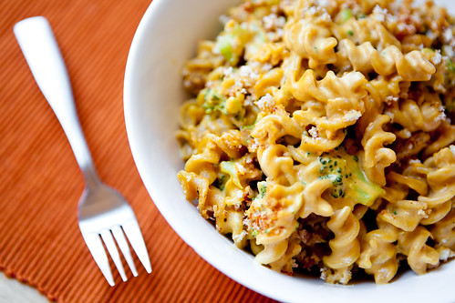

Mac & Cheeze

Description
This is a vegan mac and cheese recipe. It is not exactly like mac and cheese, but it is very rich and tasty sauce.
Ingredients
- 8-10 oz Rotini
- 2 cups Steamed Broccoli Florets
- 1 Cup Peeled, Finely Chopped Potatoes
- 1/4 Cup Peeled, Finley Chopped Carrots
- 1 Cup Water
- 1/3 Cup Raw Cashews
- 1 Tbs Miso
- 1 Tbs Tahini
- 1 Tbs Lemon Juice
- 1/2 tsp Dijon Mustard
- 1/3 Cup Margarine
- 1/3 Nutritional Yeast
- 1 tsp Salt
- Black Pepper to taste
- Paprika to taste
Steps
- Place the chopped potatoes and carrots in a sauce pan with a lid.
- Add 1 cup of water to the sauce pan.
- Boil covered until tender, 10-15 minutes.
- Add the cashews, miso, lemon juice, mustard, margarine, nutritional yeast, salt and pepper to the blender.
- Once potatoes and carrots are done cooking, add them and their cooking water to the blender.
- Blend until very smooth, add soymilk or water if needed.
- Cook the Pasta and Broccoli and mix together.